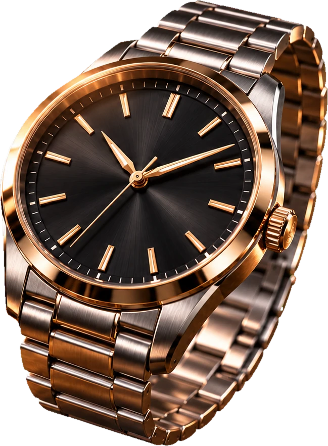
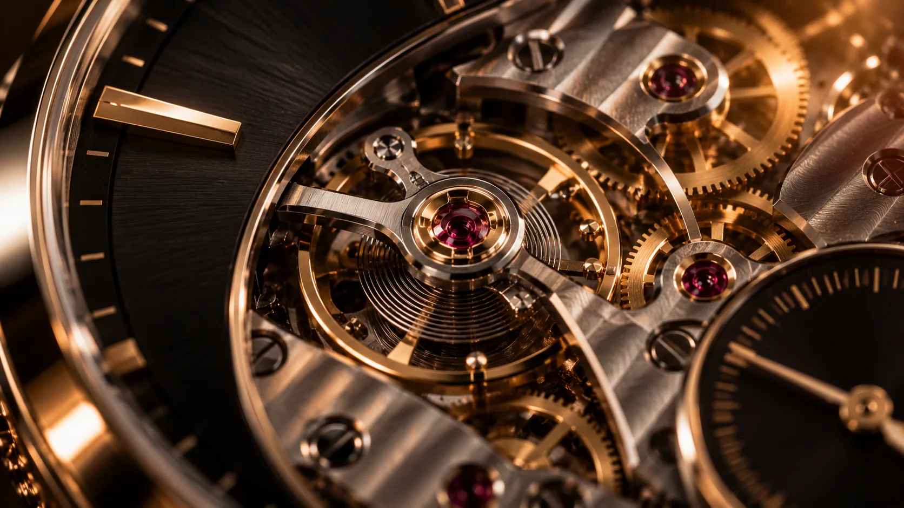
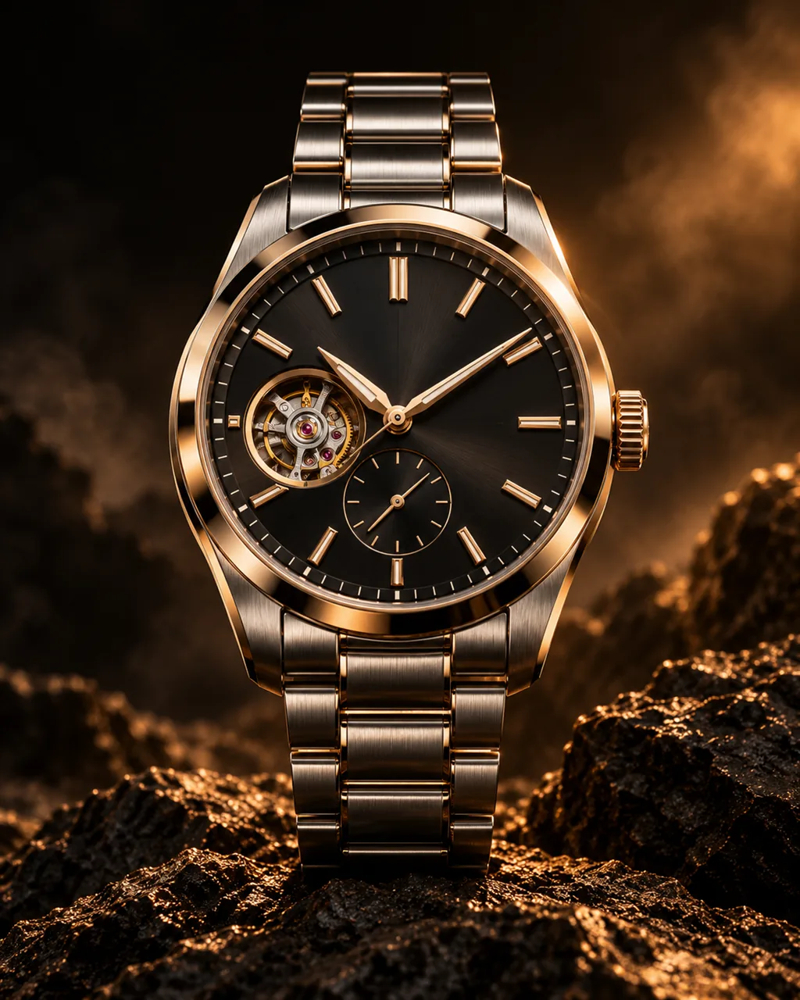
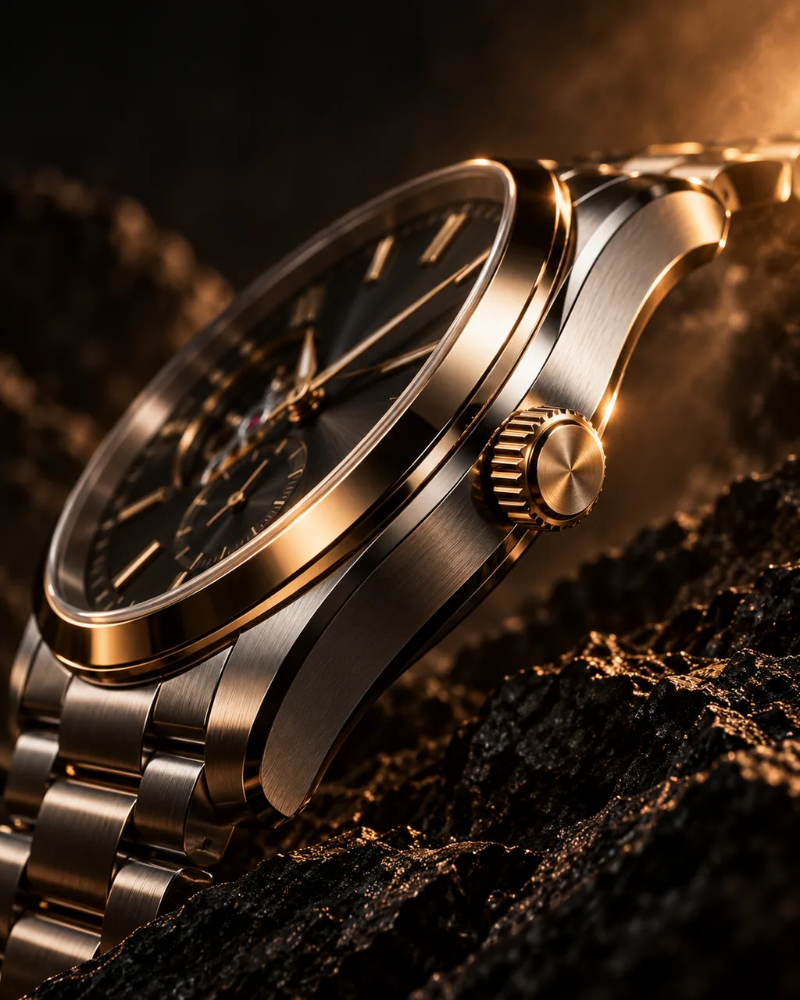
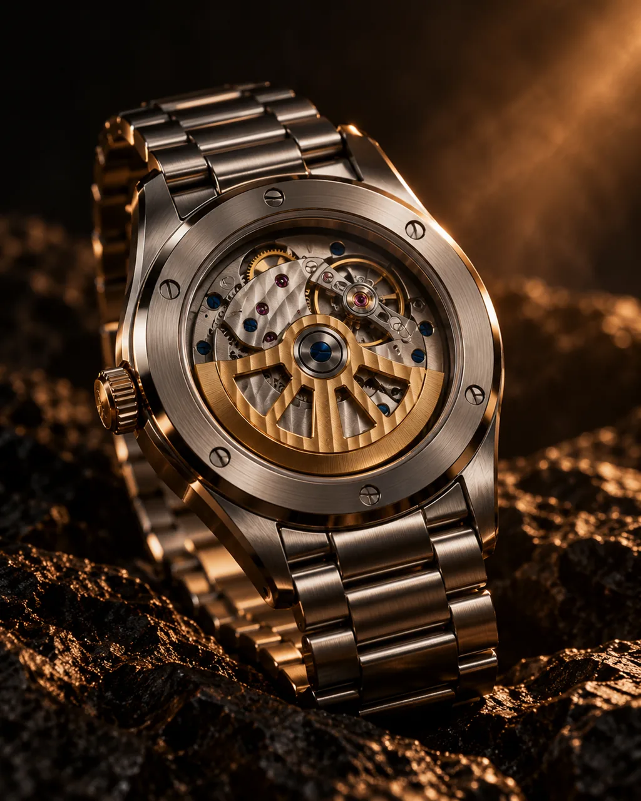
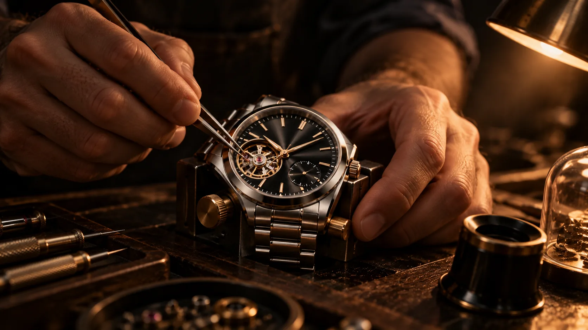

Safira e luneta
O cristal de safira e a luneta polida se erguem primeiro: a camada que protege todo o resto.

Precisão mecânica e design atemporal para quem valoriza o essencial e enxerga o tempo de outra forma.
Explorar coleçãoO cristal de safira e a luneta polida se erguem primeiro: a camada que protege todo o resto.
Ponteiros e mostrador preto raiado avançam, com os índices aplicados em ouro.
Rotor, rodas e balanço: 182 peças montadas à mão por um único relojoeiro.
Calibre AT‑01 · automático
A janela às 9 horas mostra o balanço batendo oito vezes por segundo. Cada calibre é montado e regulado à mão, na mesma bancada.

Tempo 40




O ateliê
As 182 peças do calibre passam pelas mãos de um único relojoeiro.
Ajuste em cinco posições, com tolerância de −2 a +4 segundos por dia.
15 dias de marcha registrada antes da entrega, com a ficha junto ao relógio.
Série de 250 peças numeradas
Prova no ateliê, com hora marcada. Entrega em até 60 dias após a reserva.